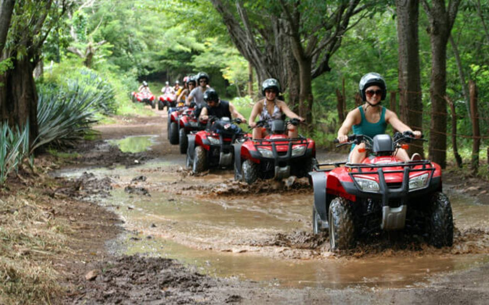

Ready to fish Guanacaste?
Seventeen boats, two bases, one honest recommendation.

Tamarindo, located in Costa Rica's beautiful Guanacaste province, is known for its vibrant surf culture, stunning beaches, and thrilling adventures. But beyond the well-known sport fishing and adrenaline-pumping tours, Tamarindo is also an excellent destination for families. If you're planning a family vacation in 2022, Tamarindo offers a wide range of family-friendly activities that can cater to all ages, ensuring your trip is filled with unforgettable memories.
Tamarindo is one of Costa Rica’s top surfing destinations, and it's a fantastic place for beginners, including kids and adults alike, to catch their first waves. The gentle, consistent breaks on Tamarindo’s main beach make it the perfect spot for learning how to surf. Surf schools throughout the town offer family-friendly group lessons with experienced instructors, ensuring everyone, from young children to parents, can safely enjoy the waves. It’s a fun and active way to introduce your family to the thrill of surfing.
Costa Rica is famous for its rich biodiversity, and Tamarindo is no exception. Families can embark on exciting nature tours to explore the region’s incredible wildlife. One of the top activities is a guided boat tour through the nearby Las Baulas National Marine Park, where you can spot crocodiles, monkeys, and countless bird species. If you visit between October and February, you may even witness leatherback sea turtles nesting on the beaches. These tours offer an educational experience that both kids and adults will love, bringing you up close to Costa Rica’s natural wonders.
For families who enjoy water activities, Tamarindo offers fantastic snorkeling and kayaking opportunities. Head to the nearby Playa Conchal or Playa Flamingo for a family-friendly snorkeling trip where you can explore colorful coral reefs and spot vibrant tropical fish. Alternatively, rent kayaks and paddle through the calm estuaries of Tamarindo or venture along the coast to discover hidden beaches. These activities allow families to experience the beauty of the ocean together while enjoying the tranquility of Costa Rica’s natural environment.
Imagine riding along the beach at sunset with your family—this is the kind of memory that will last a lifetime. Tamarindo offers horseback riding tours that are perfect for families, providing a unique way to explore the area. Whether you're riding through lush forest trails or along the shoreline with the ocean breeze in your hair, this activity is suitable for all ages. It's a peaceful, scenic experience that allows your family to bond while soaking in the natural beauty of Tamarindo.
If your family is craving adventure, Tamarindo’s ziplining tours are a must. Many adventure parks in the surrounding area offer canopy tours that are family-friendly, with varying levels of difficulty to accommodate both young kids and thrill-seeking teens and parents. As you glide through the treetops, you’ll get a bird’s-eye view of the lush rainforest and its wildlife. These tours often include other fun activities, such as suspension bridges and Tarzan swings, making it a full day of excitement for the entire family.
For families who enjoy exploring on wheels, ATV tours through the rugged terrain surrounding Tamarindo are a perfect option. Guided ATV tours take you through jungle paths, across rivers, and up to scenic viewpoints where you can enjoy breathtaking vistas of the coast. With child-friendly ATVs available and safety being a top priority, even younger members of the family can join in the fun. It’s an adventurous way to explore the natural beauty of Costa Rica and introduce your kids to off-road excitement.
Tamarindo is renowned for its sport fishing, and there’s no reason families can’t get in on the action. Many fishing charters offer family-friendly half-day trips that cater to all ages. These trips allow kids to experience the thrill of catching fish, such as tuna, mahi-mahi, and snapper, while enjoying a day out on the water. The captains and crews are experienced in working with families, ensuring that even first-time anglers can have a safe and exciting experience. It’s a great way to introduce kids to fishing and spend quality time together.
For a more relaxed adventure, consider taking a trip to a local farm or ranch. Many farms in the Guanacaste region offer family-friendly tours where you can learn about Costa Rica’s agricultural practices, meet farm animals, and even try your hand at milking cows or making cheese. These tours are especially fun for younger children and provide a hands-on experience that connects families with the rural culture of Costa Rica.
Stand-up paddleboarding is a fantastic family activity for a sunny day in Tamarindo. The calm waters of the Tamarindo estuary are ideal for beginners, and paddleboard rentals or lessons are readily available. Whether you’re gliding across the water together or racing each other, SUP is a fun and active way to spend time with your family while enjoying the natural beauty of the area.
End your day with a relaxing sunset catamaran cruise along the Pacific coast. These family-friendly tours offer a peaceful way to explore the coastline, spot dolphins and sea turtles, and enjoy snorkeling stops along the way. With food and drinks provided on board, a catamaran cruise is a great way to unwind and watch the sun dip below the horizon, creating a perfect memory for your family vacation.
In 2022, Tamarindo continues to shine as a top destination for family vacations, offering a wide range of activities that cater to all ages and interests. Whether your family loves adventure, wildlife, or simply relaxing by the beach, there’s something for everyone. With so many family-friendly activities available, Tamarindo promises to be a destination where unforgettable memories are made. So, pack your bags and get ready for an exciting family adventure in one of Costa Rica’s most beautiful regions.
Next up: Post-Pandemic Adventure: How Tourism in Tamarindo is Bouncing Back in 2022 · All posts
Seventeen boats, two bases, one honest recommendation.